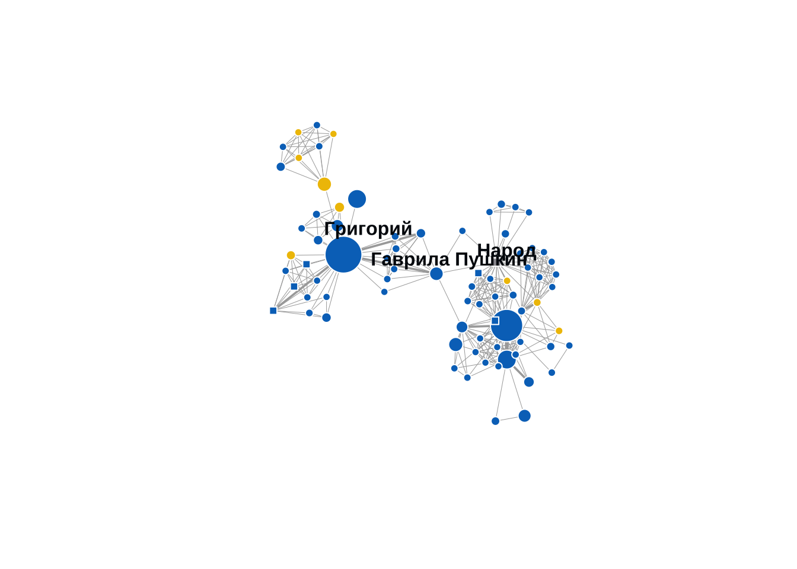

![]()
rownames(installed.packages(priority = "base")) [1] "base" "compiler" "datasets" "graphics" "grDevices" "grid"
[7] "methods" "parallel" "splines" "stats" "stats4" "tcltk"
[13] "tools" "utils" R — очень богатый язык с широкими возможностями. И он продолжает развиваться! Базовые конструкции языка изменяются достаточно редко, основное развитие происходит в дополнительных пакетах (packages).
В большинстве случаев пакеты состоят в основном из набора дополнительных функций. Кроме функций, пакеты могут содержать наборы данных и новые структуры данных.
Обычно пакеты посвящены решению какого-то класса задач в определенной области. Например, есть множество пакетов для создания одного типа визуализации. Еще один пример — пакет {beepr}, который содержит всего две функции: beep() и beep_on_error() для воспроизведения звукового сигнала. Это может быть удобно, если ваш скрипт работает долго, но вы хотите получить уведомление, когда его выполнение завершится.
Более крупные пакеты посвящены целому классу задач. Например, пакеты {stringi} и {stringr} посвящены работе со строками, значительно расширяя и делая более удобной работу со строковыми данными в R. Еще один пример: пакет {igraph} для работы с графами (сетями). Этот пакет предоставляет дополнительный класс данных {igraph} для хранения и работы с сетями.
Есть и совсем крупные пакеты, которые значительно расширяют базовый функционал R, изменяя основные принципы работы в нем. Это пакеты {data.table} и {tidyverse}. Это настолько крупные пакеты, что их даже называют отдельными диалектами R, потому что код, написанный с использованием этих пакетов, довольно сильно отличается от базового R. Кроме того, tidyverse — это не просто пакет, а целая экосистема пакетов, которые взаимодополняют друг друга, но для удобства их можно устанавливать и загружать как один пакет {tidyverse}. Еще один пример крупной экосистемы из пакетов — это пакеты {mlr3} и {tidymodels} для машинного обучения, которые представляют собой большой расширяемый “пакет пакетов”, где отдельные пакеты посвящены отдельным этапам и задачам машинного обучения. Мы будем подробнее разбирать tidyverse в Глава 10 и Глава 11.
Вообще, даже сам R является набором из нескольких пакетов: основного {base} и нескольких других, таких как {stats}, {utils}, {graphics}. Вот их полный список:
rownames(installed.packages(priority = "base")) [1] "base" "compiler" "datasets" "graphics" "grDevices" "grid"
[7] "methods" "parallel" "splines" "stats" "stats4" "tcltk"
[13] "tools" "utils" Чтобы пользоваться этими пакетами ничего дополнительно делать не нужно. Эти пакеты автоматически подключаются при запуске новой сессии R.
Функция install.packages() позволяет скачивать и устанавливать пакеты с Comprehensive R Archive Network (CRAN). В репозитории CRAN собрано 23 792 пакета (на 11 июня 2026 года)1. Каждый из этих пакетов проходит проверку перед попаданием в CRAN: он должен быть хорошо задокументирован, стабильно работать и решать какую-то задачу. Причем эта проверка не разовая: пакеты, которые перестали проходить проверки, из CRAN убирают (архивируют), а сами требования к пакетам периодически ужесточаются — знаю это по своему опыту: мой пакет {rdracor} несколько раз архивировали, пока я не адаптировал его под новые требования. Поэтому количество пакетов может не только увеличиваться, но и уменьшаться.
Для примера установим пакет {pak}. Это универсальный пакет для удобной установки других пакетов из разных источников — он нам скоро понадобится.
install.packages("pak")При установке вы увидите много непонятных надписей красным (или черным) шрифтом. Не пугайтесь, это нормально, происходит скачивание и установка пакетов. Скорее всего, если нигде нет слова Error, то пакет успешно установился.
Иногда установка бывает очень долгой, потому что большие пакеты склонны иметь много зависимостей (dependencies): для работы какого-то пакета могут понадобиться другие пакеты, а для тех пакетов — еще какие-то пакеты. Таким образом, устанавливая какой-нибудь современный пакет, вы, возможно, установите десятки других пакетов! Зато если они понадобятся сами по себе, то их уже не нужно будет устанавливать.
Установить пакет с помощью install.packages() недостаточно — его нужно еще загрузить. Для этого есть функция library().
library("pak")В отличие от install.packages(), функция library() принимает название пакета и как строчку в кавычках, и как название без кавычек.
library(pak)Теперь функции, данные и классы из пакета доступны для работы.
Если сравнивать с Python, то install.packages() — это аналог установки библиотек, например, с помощью pip, а library() — это аналог import (например, import pandas as pd).
::Если пакетом нужно воспользоваться всего один-два раза, то имеет смысл не подключать весь пакет, а загрузить отдельную функцию из него. Для этого есть специальный оператор ::, который использует функцию (указанную справа от ::) из выбранного пакета (указанного слева от ::), не загружая пакет полностью.
Для примера воспользуемся функцией pkg_deps() из только что установленного пакета {pak}, которая возвращает все зависимости пакета:
pak::pkg_deps("tidyverse")✔ Updated metadata database: 6.67 MB in 6 files.ℹ Updating metadata database✔ Updating metadata database ... done# A data frame: 97 × 33
ref type direct directpkg status package version license needscompilation
<chr> <chr> <lgl> <lgl> <chr> <chr> <chr> <chr> <lgl>
1 askpa… stan… FALSE FALSE OK askpass 1.2.1 MIT + … TRUE
2 backp… stan… FALSE FALSE OK backpo… 1.5.1 GPL-2 … TRUE
3 base6… stan… FALSE FALSE OK base64… 0.1-6 GPL-2 … TRUE
4 bit stan… FALSE FALSE OK bit 4.6.0 GPL-2 … TRUE
5 bit64 stan… FALSE FALSE OK bit64 4.8.2 GPL-2 … TRUE
6 blob stan… FALSE FALSE OK blob 1.3.0 MIT + … FALSE
7 broom stan… FALSE FALSE OK broom 1.0.13 MIT + … FALSE
8 bslib stan… FALSE FALSE OK bslib 0.11.0 MIT + … FALSE
9 cachem stan… FALSE FALSE OK cachem 1.1.0 MIT + … TRUE
10 callr stan… FALSE FALSE OK callr 3.8.0 MIT + … FALSE
# ℹ 87 more rows
# ℹ 24 more variables: priority <chr>, md5sum <chr>, sha256 <chr>,
# filesize <int>, built <chr>, platform <chr>, rversion <chr>,
# repotype <chr>, repodir <chr>, target <chr>, deps <list>, mirror <chr>,
# sources <list>, remote <list>, error <list>, metadata <list>,
# dep_types <list>, params <list>, sysreqs <chr>, os_type <chr>,
# cache_status <chr>, lib_status <chr>, old_version <chr>, …В дальнейшем оператор :: будет иногда использоваться, чтобы указать, из какого пакета взята функция.
Оператор :: полезен еще и в тех случаях, когда в разных пакетах присутствуют функции с одинаковым названием. Например, у основного пакета tidyverse, {dplyr}, есть функция filter(). Функция с точно таким же названием есть в базовом R в пакете {stats}, в котором та выполняет совершенно другую задачу. Если у вас уже загружен {dplyr}, то использование :: укажет на то, что вы хотите воспользоваться именно функцией filter() из пакета {stats}:
stats::filter(1:20, rep(1,3))Time Series:
Start = 1
End = 20
Frequency = 1
[1] NA 6 9 12 15 18 21 24 27 30 33 36 39 42 45 48 51 54 57 NAПодобная путаница может возникнуть, если у вас загружено много пакетов, поэтому старайтесь не загружать слишком много пакетов, а если есть функции с одинаковым названием, то обязательно используйте оператор ::. Иначе слишком велик риск загрузить пакеты не в том порядке и получить из-за этого ошибку или некорректный результат.
:: для указания используемого пакета
В дальнейшем я буду иногда использовать ::, чтобы было понятно, из какого пакета взята та или иная функция.
Выгрузить ненужный пакет можно с помощью функции detach().
detach(package:pak)Некоторых пакетов нет ни на CRAN, ни на Bioconductor. Обычно это касается пакетов, разработчики которых по каким-либо причинам решили не проходить проверки или не прошли проверки на строгие требования CRAN. Иногда бывает, что пакет был удален с CRAN (например, автор давно не занимается им) или же версия пакета на CRAN отстает от последней, а именно в ней реализованы так нужные вам функции. В некоторых случаях пакета может не быть на CRAN, потому что его разработчики активно занимаются его развитием и постоянно переделывают уже имеющийся функционал, добавляя новые возможности и удаляя старые. Это нужно делать с осторожностью, когда пакет уже выложен на CRAN, потому что если функции новой версии пакета будут работать по-другому, то это может вызвать массу проблем.
Во всех этих случаях пакет обычно можно скачать с репозитория GitHub. Для этого нам понадобится уже установленный пакет {pak}. Достаточно передать в pak::pak() адрес репозитория в формате "пользователь/репозиторий":
pak::pak("dracor-org/rdracor")Теперь установленный пакет осталось загрузить, после чего им можно пользоваться.
library(rdracor)
godunov <- get_net_cooccur_igraph(corpus = "rus",
play = "pushkin-boris-godunov")
plot(godunov)
У биологов есть свой большой репозиторий, который является альтернативой CRAN, — Bioconductor. С него можно скачать множество специализированных пакетов для работы с биологическими данными.
Пакет {pak} умеет устанавливать пакеты и с Bioconductor — достаточно добавить префикс bioc:: перед названием пакета. Например, для установки пакета {flowCore} — пакета для анализа данных проточной цитометрии:
pak::pak("bioc::flowCore")Мы разобрались с тем, как устанавливать пакеты. А где же их находить?
Это вопрос гораздо более сложный, чем может показаться. Например, можно работать в R и не знать, что существует пакет, который решает нужную для вас задачу. Или же найти такой пакет и не знать, что есть более современный пакет, который делает это еще лучше!
Здесь нет каких-то готовых решений. CRAN пытается создавать и поддерживать тематические списки (Task View) пакетов с описанием задач, которые они решают: https://cran.r-project.org/web/views/
Безусловно, если вы глубоко занимаетесь какой-либо темой из списка, то стоит изучить соответствующий Task View, но начинать знакомство с помощью Task View достаточно тяжело.
Другой вариант — просто погуглить, найти релевантные статьи или книги. Внимательно смотрите на дату публикации: R — очень быстро развивающийся язык, поэтому с большой вероятностью то, что было написано пять лет назад, уже потеряло актуальность. Нет, работать это будет, но, скорее всего, появился более удобный и продвинутый инструмент.
Число пакетов, которое вы видите в книжке, посчитано в R с помощью команды nrow(available.packages()). Попробуйте запустить эту команду самостоятельно — и вы почти наверняка получите уже немного другое число!↩︎